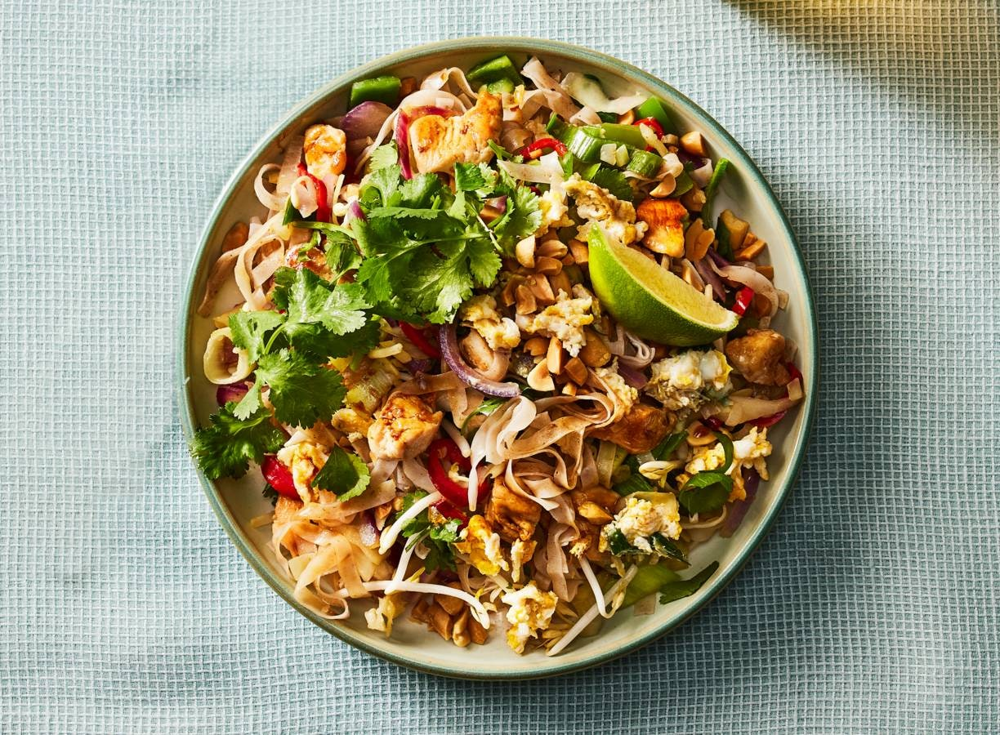

Pad Thai
Informatie Bereidingswijze
- kooktijd: 15-20 minuten
- Aantal personen: 2

Benodigde Ingrediënten
- 2 eieren
- 25g gezouten pinda's
- 25ml heet water
- 150g kipfiletblokjes
- 1l koud water
- 25g lichtbruine basterdsuiker
- 1/2 limoen
- 115g rijstnoedels 5mm
- 200g Thaise wokgroente
- 45g tamarindepasta
- 60g taugé
- 5g verse koriander
- 30ml vissaus
- 2el zonnebloemolie
Bereidingswijze
- Week de noedels in het koude water. Hak de pinda grof. Snijd de koriander grof. Snijd de limoen eerst door de helft en gebruik alleen één helft om die ook door tweeën te delen. Klop de eieren los in een klein kommetje.
- Meng de vissaus, tamarindepasta, basterdsuiker en heet water in een kommetje. Roer dit goed door elkaar. Giet de noedels af (optioneel in een vergiet).
- Verhit de olie op hoog vuur in een grote wok- of hapjespan. Bak de kipblokjes totdat ze er lichtbruin uitzien. Voeg de wokgroente toe en roerbak nog 2 min. Voeg de noedels en de saus in het kommetje toe aan de pan en roerbak nog voor een aantal minuten totdat de noedels zich alle saus hebben opgenomen.
- Schuif de kip, groente en noedels naar een kant van de pan en voeg de eieren toe op de olie. Schep de eieren pas door wanneer er rondom een bubbelrandje is ontstaan. Schep alles in de pan om en bak nog 1 min. Schep de taugé, pinda’s en koriander er doorheen. Breng eventueel op eigen smaak met peper en zout.
- Verdeel de noedels over 2 kommen en serveer met een partje limoen.